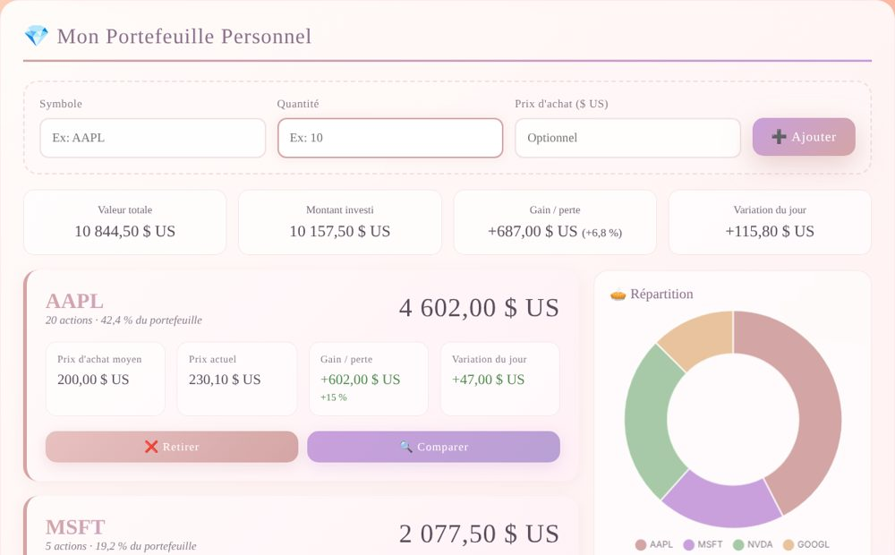

FinTechSmartWealth
Tableau de bord financier personnel : recherche d'actions, graphique des 30 derniers jours, comparaison et suivi d'un portefeuille avec gains et pertes.
- Calcul du prix moyen pondéré quand on rachète une action, et répartition du portefeuille
- Logique séparée de l'affichage et couverte par 13 tests unitaires
- Mode démo automatique quand la limite de l'API gratuite est atteinte
- Protection XSS, interface responsive et mode sombre
JavaScript
HTML / CSS
Chart.js
API REST
node:test